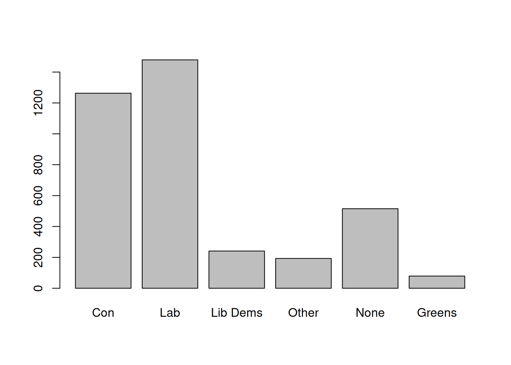

7 Graphs and plots
There are two main ways to produce graphs in R: either by using the straightforward but rather basic plotting commands from the Base package, or the more complex and nicer looking functions from the ggplot package.
7.1 Distributional graphs for continuous variables
Graphs such as histograms or box plots are a convenient way to gain a quick overview of the distribution of a variable and are easy to produce. Go back to the BSA data, we can plot the distribution of left-right political orientations scores with the hist() command.

The graphs appear visible in the ‘Plot’ tab on the right hand side of the R Studio window. It shows us that political orientations are slightly skewed towards the left. The freq=FALSE option requires the y-axis to be expressed in terms of proportions rather than frequencies.
Titles and labels can easily be added:
hist(bsa$leftrigh,
freq=FALSE,
main="Histogram of political orientations",
ylab="Proportions",
xlab="Left-right political orientations score")
Note that main, ylab and xlab can be used with any Base R plot commands.
We can also produce a box and whisker plot of the same variable:
boxplot(bsa$leftrigh,
main="Box and whisker plot of political orientations",
ylab="Left-right political orientations score"
)
The generic plot() command produces one or two-way scatterplots:

plot(bsa$leftrigh,bsa$libauth) ### Two-way scatterplot of political orientations by authoritarianism score
The second graph shows us that there is little association between the two variables. However, slightly fewer respondents simultaneously score high on the authoritarianism and left vs right scales.
7.2 Plotting categorical variables
The generic plot() function provides a quick way to produce bar plots of categorical data. For example, we can examine the distribution of political party affiliations (Politics variable) which is a factor (ie categorical) variable. Some preliminary abbreviating of the factor levels are required in order for them to be displayed properly.
## [1] "Conservative" "Labour"
## [3] "Liberal Democrat" "Other party"
## [5] "None" "Green Party" More advanced plots require the barplot() function, which can be used in conjunction with table(). Whereas table() creates the data that will be plotted, barplot() does the actual plotting. For instance, we can produce the same bar plot, but this time with percentages, by creating a frequency table as we did above in Section 5.2, then plot it.
##
## Con Lab Lib Dems Other None Greens
## 33.5 39.2 6.4 5.1 13.7 2.1
We can go further and create plots for two way contingency tables of party affiliation by gender. This time we will do it in a single command:
barplot(
round(100*prop.table(
table(bsa$Rsex,bsa$PartyId2),
2), ## Column % (here, gender)
1), ## Rounded to 1 decimal
beside = T, ## Side-by-side bars
main="Political party affiliation by gender",
ylab="Percent")
7.3 More advanced plots
Social science research often requires more advanced plots in order to conduct more complex analyses, for instance comparing the mean or median value of a continuous outcome across two or more categorical variables. The ggplot package provides one of the most advanced set of tools for plotting data currently available. A few examples are provided below.
Political party affiliation by highest qualification and gender We would like to look at how differences in political party affiliations vary by gender and whether respondents have a degree-level education.
Let us first prepare the data: we need to create the table of result, the proportion of degree vs non degree holders by gender and political party. This is a three-way contingency table, that we can obtain with ftable() as shown in Section 5.2, combined with prop.table() for the computation of proportions and round().
As they are more straightforward to handle in ggplot, we convert the table object created by ftable into a data frame. Although we can specify titles and axis labels in the plotting command, it is preferable to keep things simple here and have them already in the the data.
Rather than using the full range of educational achievements recorded in HEdQual3, we would like instead to have a dichotomic variable between degree holders and non degree holders. Adding it directly in the ftable command as a boolean expression return a dichotomic variable: “TRUE” for Degree educated respondents, and “FALSE” for everyone else. We just need to change the levels of this factor variable to make them more intelligible. Finally we change the variable names in our data frame.
pa<-round(100*prop.table((ftable(bsa$PartyId2,bsa$Rsex,(bsa$HEdQual3=="Degree"))),1),1)
pa<-data.frame(pa)
levels(pa$Var3)<-c("Below","Degree")
names(pa)<-c("Affiliation","Gender","Education","Percent")
pa## Affiliation Gender Education Percent
## 1 Con Male Below 72.7
## 2 Lab Male Below 70.1
## 3 Lib Dems Male Below 50.0
## 4 Other Male Below 86.5
## 5 None Male Below 88.8
## 6 Greens Male Below 43.3
## 7 Con Female Below 82.6
## 8 Lab Female Below 67.3
## 9 Lib Dems Female Below 54.4
## 10 Other Female Below 74.7
## 11 None Female Below 83.9
## 12 Greens Female Below 48.9
## 13 Con Male Degree 27.3
## 14 Lab Male Degree 29.9
## 15 Lib Dems Male Degree 50.0
## 16 Other Male Degree 13.5
## 17 None Male Degree 11.2
## 18 Greens Male Degree 56.7
## 19 Con Female Degree 17.4
## 20 Lab Female Degree 32.7
## 21 Lib Dems Female Degree 45.6
## 22 Other Female Degree 25.3
## 23 None Female Degree 16.1
## 24 Greens Female Degree 51.1We are now ready to plot the data. the ggplot() commands usually works as a succession of layers or options that are added to an initial plot specifications. Each extra layer is added after a + sign. In the example below, we specify the data and the aesthetic (ie the main parameters of the plot) with the first command: the x and y variables , and the first grouping variable, education). geom_bar() stipulates the bar plot, with the ṕosition=“dodge” for the bars to be located side by side (position=“stack”would have them on top of each other). Finally, facet_wrap() splits the plot by gender.
ggplot(data=pa,aes(y=Percent,x=Affiliation,fill=Education))+
geom_bar(position="dodge",stat="identity")+
facet_wrap(~Gender)+
theme_minimal()+ ### Theme for visualisation
scale_fill_manual(values=c("#702082", "#008755")) ### Manually specifying the colours (optional)